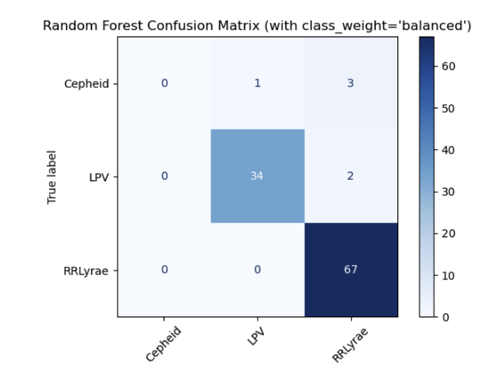

Case study
Rubin Variable Star Workflow
A decision pipeline that turns large, noisy Rubin Observatory catalog data into a prioritized shortlist of candidate variable stars. The workflow was designed to support ranking, review, and follow-up decisions through transparent scoring, repeatable analysis, and interpretable model outputs.
Outcomes
- Built an end-to-end decision workflow that converts high-volume observational data into a ranked, reviewable candidate shortlist.
- Designed an interpretable scoring system to help prioritize which objects should receive further inspection or follow-up analysis.
- Produced reusable outputs for stakeholders, including ranked tables, saved artifacts, model results, and documented assumptions.
- Developed an initial classifier achieving ~94% accuracy, creating a scalable foundation for triaging future catalog updates.
- Documented the workflow for technical and non-technical audiences, emphasizing repeatability, transparency, and decision usefulness.

Problem
Large astronomical catalogs create a prioritization problem. Researchers cannot manually inspect every object with equal attention, especially when observations are noisy, incomplete, or updated at scale. The challenge was to turn raw catalog-level signals into a structured decision process: which candidates should be reviewed first, why they ranked highly, and how the process could be repeated as more data becomes available.
Approach
- Translated an open-ended research problem into a structured ranking and prioritization workflow.
- Explored large-scale observational data to identify signals that could support candidate triage.
- Engineered interpretable variability metrics that could be compared consistently across objects.
- Combined metrics into a composite index to create a transparent prioritization framework.
- Added machine learning classification to support scalable review as additional catalog data becomes available.
- Packaged the workflow with documented assumptions, outputs, and scope boundaries for reuse by future researchers.
Why this matters
This project is less about astronomy alone and more about a transferable analytics pattern: turning complex, noisy data into a repeatable decision system. The same structure applies to strategy, operations, product, and program analytics contexts where teams need to prioritize limited attention, explain recommendations, and create workflows that scale as new data arrives.